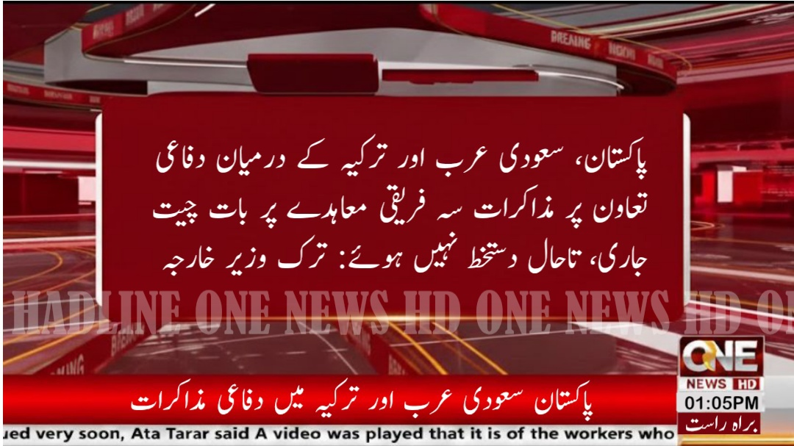
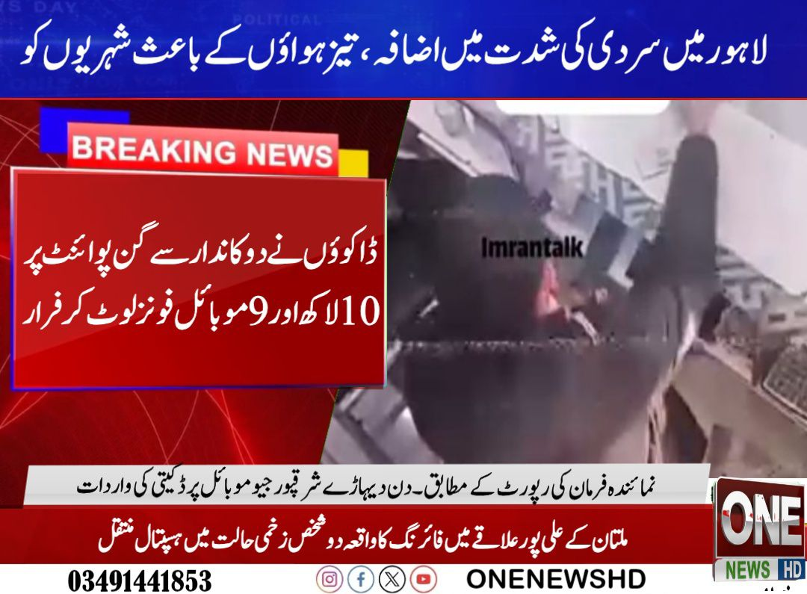
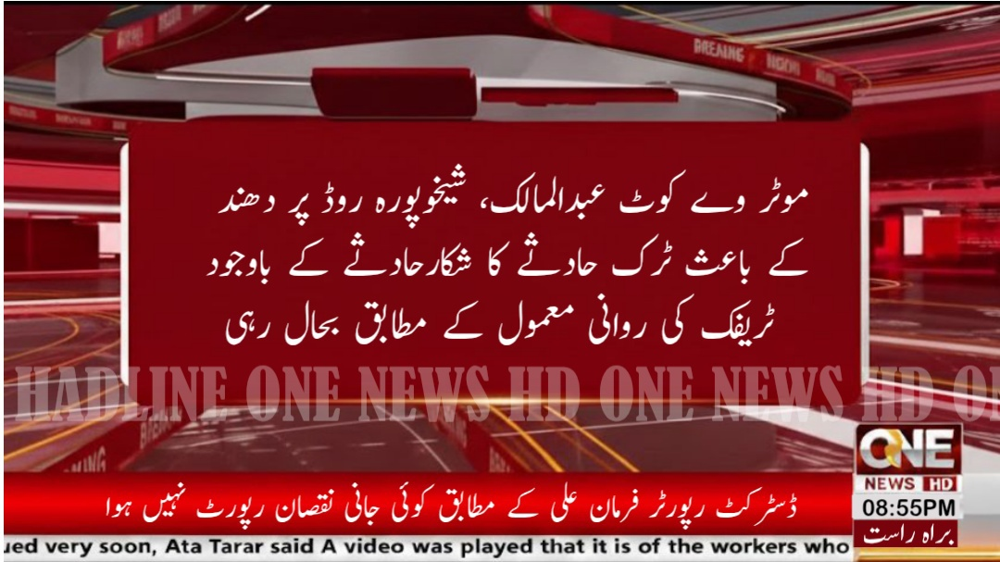
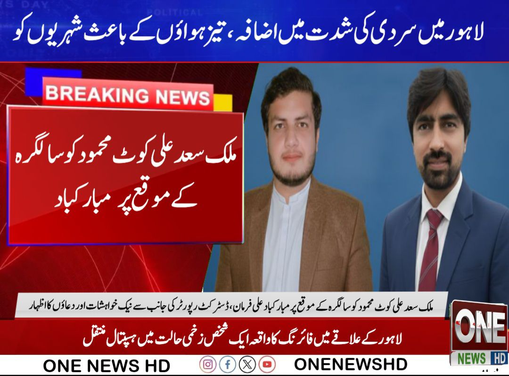

علی اصغر ون نیوز ایچ ڈی کے چیف ایگزیکٹو آفیسر ہیں، جو ادارے کو سچائی، دیانت داری اور جدید ڈیجیٹل صحافت کے اصولوں کے تحت کامیابی کی جانب لے جا رہے ہیں۔ ان کی قیادت میں ون نیوز ایچ ڈی ایک مستند اور قابلِ اعتماد نیوز پلیٹ فارم کے طور پر اپنی پہچان مضبوط کر رہا ہے۔
علی اصغر صحافتی معیار کو بہتر بنانے، ڈیجیٹل میڈیا کو فروغ دینے اور عوام تک بروقت و مستند خبریں پہنچانے کے لیے بھرپور کردار ادا کر رہے ہیں۔

پاکستان، سعودی عرب اور ترکیہ کے درمیان دفاعی تعاون پر اہم مذاکرات جاری ہیں۔ ترکیہ کے وزیر خارجہ کے مطابق بات چیت مثبت ہے تاہم تاحال کوئی حتمی معاہدہ طے نہیں پایا۔ دفاعی تعاون کو مزید مضبوط بنانے پر غور جاری ہے۔

ون نیوز کو دنیا بھر سے نمائندگان کی ضرورت ہے۔ خواہش مند حضرات واٹس ایپ پر رابطہ کریں۔

ون نیوز ایچ ڈی نمائندہ فرمان کی رپورٹ کے مطابق۔ دن دیہاڑے شرقپور جیو موبائل پر ڈکیتی کی واردات، ڈاکوؤں نے دکاندار سے گن پوائنٹ پر 10 لاکھ روپے اور 9 موبائل فونز لوٹ کر فرار ہو گئے۔
رپورٹ: ون نیوز ایچ ڈی
ون نیوز ایچ ڈی کی جانب سے عوام کو آگاہ کیا جاتا ہے کہ نذیر کریم کو تحصیل ٹھاری میرواہ، ضلع خیرپور کراچی میں ون نیوز ایچ ڈی میں صوبہ انچارج نمائندگان مقرر کر دیا گیا ہے۔
نذیر کریم، باصلاحیت اور ذمہ دار صحافتی شخصیت ہیں، جن سے توقع کی جاتی ہے کہ وہ صحافتی اصولوں کو مدنظر رکھتے ہوئے جرائم سے متعلق درست، بروقت اور مستند خبریں عوام تک پہنچائیں گے۔
تمام سرکاری و غیر سرکاری ادارے، قانون نافذ کرنے والے ادارے، سماجی تنظیمیں اور معزز شخصیات ان کے ساتھ مکمل تعاون فرمائیں۔
رپورٹ: ون نیوز HD
ملائکہ کو تحصیل فیصل آباد، چک نمبر 96 میں ون نیوز ایچ ڈی کا فیلڈ رپورٹر مقرر کر دیا گیا ہے۔ ملائکہ ایک متحرک، باصلاحیت اور ذمہ دار صحافتی شخصیت ہیں، جن سے توقع کی جاتی ہے کہ وہ صحافتی اصولوں کو مدنظر رکھتے ہوئے درست، بروقت اور مستند خبریں عوام تک پہنچائیں گی۔ تمام سرکاری و غیر سرکاری ادارے، قانون نافذ کرنے والے ادارے، سماجی تنظیمیں اور معزز شخصیات ان کے ساتھ مکمل تعاون فرمائیں
رپورٹ: ون نیوز HD
محمد زبیر شاہد کو ضلع بہاولنگر کی تحصیل فورٹ آباد میں تعینات کر دیا گیا ہے۔ تمام سرکاری و غیر سرکاری ادارے نوٹیفکیشن کے مطابق عمل کریں۔
رپورٹ: ون نیوز HD

ون نیوز ایچ ڈی کی جانب سے باقاعدہ اعلان کیا جاتا ہے کہ فرمان علی کو تحصیل شرقپور ضلع شیخوپورہ میں ڈسٹرکٹ رپورٹر مقرر کر دیا گیا ہے۔
فرمان علی ایک ذمہ دار اور متحرک صحافی ہیں جو علاقے کی درست، بروقت اور مستند خبریں عوام تک پہنچائیں گے۔ تمام سرکاری و غیر سرکاری ادارے ان کے ساتھ تعاون کریں۔
📞 رابطہ: 03204903112
📘 فیس بک: ONENEWSHD

موٹر وے کوٹ عبدالمالک، شیخوپورہ روڈ پر شدید دھند کے باعث ایک ٹرک حادثے کا شکار ہو گیا۔ حادثے کے باوجود ٹریفک کی روانی معمول کے مطابق جاری رہی اور کسی جانی نقصان کی اطلاع موصول نہیں ہوئی۔
ڈسٹرکٹ رپورٹر: فرمان علی

لاہور میں سردی کی شدت میں اضافے اور تیز ہواؤں کے باعث شہریوں کو شدید مشکلات کا سامنا ہے۔ محکمہ موسمیات کے مطابق آئندہ چند روز تک موسم سرد اور خشک رہنے کا امکان ہے، جبکہ شہریوں کو غیر ضروری باہر نکلنے سے گریز کرنے کی ہدایت کی گئی ہے۔